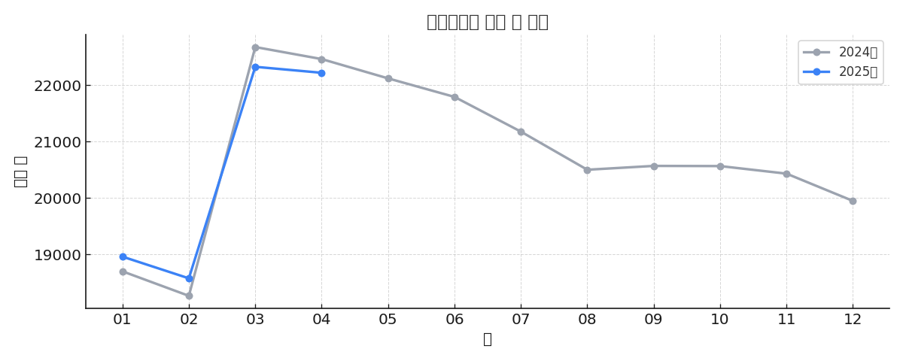

📊 기존캠퍼스 캠퍼스 학생 수 분석 보고서 (2024 vs 2025)
✅ 1. 요약 (2025년 4월 기준)
기존캠퍼스 캠퍼스 2025년 4월 기준:
- 전월 대비 학생 수가 106명 감소했습니다.
- 전년 동월 대비 243명 감소했습니다.
- 작년보다 감소폭이 둔화되어 0.5%p 개선되었습니다.
📈 2. 학생 수 추이 차트

📊 3. 학생 수 분석표
| 구분 | | 01 | 02 | 03 | 04 | 05 | 06 | 07 | 08 | 09 | 10 | 11 | 12 | 평균 |
|---|
| 학생 수 | 2024년 | 18702 | 18268 | 22674 | 22461 | 22119 | 21791 | 21176 | 20501 | 20569 | 20566 | 20432 | 19949 | - |
| 2025년 | 18962 | 18578 | 22324 | 22218 | - | - | - | - | - | - | - | - | - |
| 전월 대비 | 전월 | - | -384 | 3746 | -106 | - | - | - | - | - | - | - | - | - |
| 전월 대비 | 전월 | - | -2.0% | 20.2% | -0.5% | 0.0% | 0.0% | 0.0% | 0.0% | 0.0% | 0.0% | 0.0% | 0.0% | - |
| 전년 대비 | 전년 | 260 | 310 | -350 | -243 | - | - | - | - | - | - | - | - | - |
| 전년 대비 | 전년 | 1.4% | 1.7% | -1.5% | -1.1% | - | - | - | - | - | - | - | - | - |
| 전년 대비 | 추가 | - | 0.3%p | -4.0%p | 0.5%p | 1.5%p | 1.5%p | 2.8%p | 3.2%p | -0.3%p | 0.0%p | 0.7%p | 2.4%p | - |